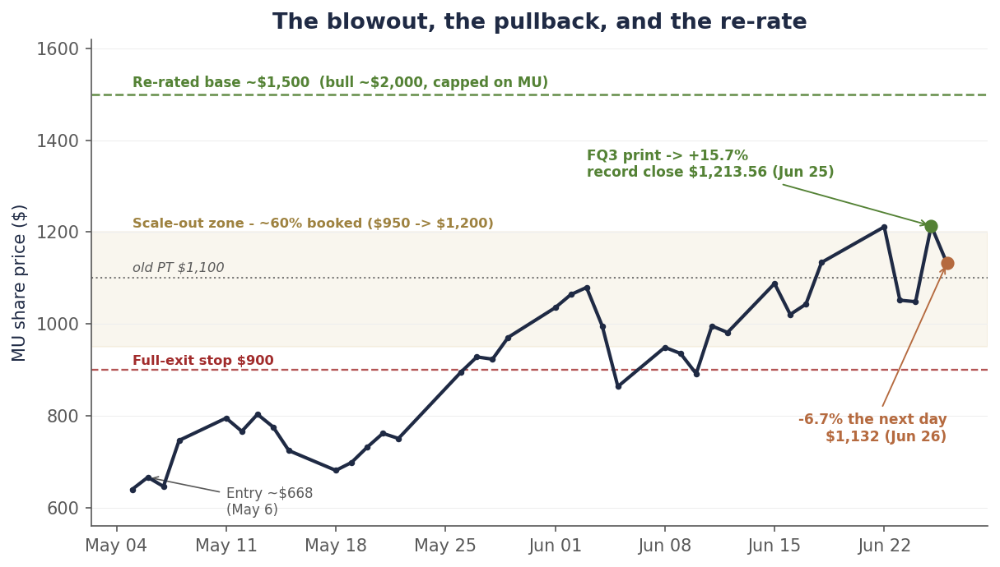

Single-name update · Memory · FQ3 reckoning
Micron didn’t fade. It ripped 16%. What we got wrong — and the contract that rewrote the thesis.
Five days ago I wrote that the in-quarter beat was priced, that the most likely outcome was a solid-but-priced print that fades, and I leaned toward not chasing. Micron printed $41.46B in revenue, an 84.9% gross margin and $25.11 in EPS — both non-GAAP — guided next quarter to $50B, and the stock ripped ~16% (a +15.7% single session) to a record $1,213.56. The fade I flagged as most likely never came. I was wrong on the direction, and the honest thing is to say so plainly before saying anything else.
Two things are also true. First, the framework still won: we had scaled out roughly 60% of the position — five 10% trims on the way up and a sixth into the print’s spike — and held the ~40% residual behind a hard stop, so the core we kept rode the entire ~16%. Being wrong on the call and right on the position at the same time is exactly what the discipline is built to do. Second — and this is the part the headlines missed — the real story wasn’t the quarter. It was the contract.
Micron signed $100 billion of multi-year strategic customer agreements, and management said the quiet part out loud: at the contracted floor price, margins run above the company’s all-time peaks. That structurally de-risks the down-cycle and earns Micron a higher multiple than memory has ever deserved — which is why the price target moves from $1,100 toward ~$1,500. The same contracts also cap the upside, which is why I’m not reaching for the $2,000 the Street now prints. And the stock gave back 6.7% the very next day, which tells you the easy money is already gone.
Chart 1 — The blowout, the pullback, and the re-rate
~$668 to a record $1,213.56 on the print, −6.7% the next day, and a price target that moves from $1,100 toward ~$1,500.

Daily closes, May 5–June 26, 2026. From a ~$668 entry on May 6, the print took the stock to a record $1,213.56 (+15.7% on the day) on June 25, then it gave back 6.7% to $1,132.33 the next day in a broad chip selloff. We booked ~60% of the position across the $950–$1,200 scale-out zone and hold the residual behind a $900 stop. Source: closing prices via the bpleon price feed; FQ3 figures per Micron’s 8-K.
What we got wrong
The print-eve framework had four scenarios. The modal case I leaned on, at roughly even odds, was a modest beat that the stock couldn’t celebrate because it was priced — the Broadcom template, where a record quarter sells off because the good news is already owned. The low-probability tail was a blowout that breaks higher.
The tail didn’t just hit; the print sailed past even my upside scenario. Revenue of $41.46B cleared the $36–38B I had pencilled for the bull case, and the FQ4 guide of $50B demolished the $42B-and-up bar that would have counted as a blowout. The beat was so far beyond consensus — about $6B over the Street on revenue, ~$5 over on EPS — that the in-price bar simply did not matter. There was no fade to be had on a number that large.
I’ll name the error precisely: I correctly identified that the stock was priced for a strong print, and I incorrectly assumed a strong print was the ceiling. Management had told us for two quarters they sandbag; I modeled the sandbag and still underestimated it. That is the second time this cycle the company’s conservatism has been larger than my adjustment for it. Lesson logged.
Why the discipline still won
Here is the part that matters more than the call. Going into the print we had already booked roughly 50% in five 10% trims on the way up — $950, $1,000, $1,100, $1,150 and $1,200 — selling into strength; we trimmed a sixth 10% into the print’s spike, taking the booked total to ~60%, and held the ~40% residual behind a single hard line: a close below $900 and we are fully out. We did not buy options into the print (the implied move was already rich and the vol crush punishing), and we did not sell covered calls (which would have capped exactly the rip that came).
So when the stock gapped ~16%, the residual rode with it. We captured the upside on the ~40% we kept while having de-risked the ~60% we had already booked — the textbook outcome of a framework designed to win whichever way the print lands. The point of the scale-out was never to predict the number. It was to make the prediction not matter.
The real story: the contract, not the quarter
Everyone covered the blowout. Almost no one led with the thing that actually changed the company. On the call, Micron detailed 16 strategic customer agreements totaling roughly $100 billion of contracted revenue, backed by about $22 billion of customer cash already on deposit, covering ~20% of DRAM and a third of NAND volume. These are take-or-pay: binding volume commitments, prepaid. Separately — and this is the figure that drives the collar below — management said roughly 40% of revenue now carries fixed prices or price ceilings near current levels.
The structure is the story. From the call, verbatim: the largest agreements carry “a ceiling price for existing products at the current CQ2 market price and a floor price through the term.” Then the line that re-rates the multiple: “At the floor price, our profitability levels are higher than peak margins at any time in the past.”
Read that again. Even in a downturn, on the contracted ~40% of revenue, Micron now earns more than it ever did at any prior cycle peak. The boom-bust amplitude that always capped memory’s multiple has been partially contracted away. That is a genuine structural change, not a cyclical high — and it is the real reason a memory company can carry a higher multiple than memory companies historically have.
But a collar has two sides. The same ceilings mean that on that ~40% of revenue, Micron cannot fully reprice if 2027 gets tighter — while the unhedged peers, SK Hynix and Samsung, keep the full shortage torque. So the contracts raise the floor and cap the ceiling at once. Micron has traded some of its upside for a great deal of its downside. For a position we are now mostly holding as a lower-risk runner, that is a trade I’ll take.
The re-rate: $1,100 toward ~$1,500
Our $1,100 target was built on roughly $100 of FY27 EPS at an ~11× recovery multiple. The print broke both inputs. The $50B revenue guide at ~86% gross margin implies roughly $31 of FQ4 EPS — which puts FY26 EPS around $73 ($4.78 + $12.20 + $25.11 + the implied ~$31), and annualizes the FQ4 exit rate to roughly $124 ($31 × 4). FY27 EPS in the $120–130 range is now the reasonable base, not the bull case.
The multiple has to move too, and the collar is the reason it legitimately can. A company whose downside margins exceed its old peak margins is not an 11× trough-cyclical — 12–13× is defensible for the first time. That math — ~$120 × ~12.5× — puts the base case at roughly $1,500. The verified floor argues it could reach $1,600; the verified ceiling is why I will not chase the $2,000 the Street’s high marks now print, because that torque belongs to the unhedged peers, not to Micron specifically.
The change gets a story, because every change should. The trigger is the FQ3 blowout, the $50B guide, and the $100B contract backlog; the old number was too low on earnings power and on the multiple. New base: ~$1,500, up from $1,100. I’ll formalize the year-by-year model before treating that as a hard number.
| Input | Old ($1,100 PT) | New (post-print) |
|---|---|---|
| FY27 EPS | ~$100 | ~$120–130 |
| Multiple | ~11× (trough-recovery) | ~12.5× (floor > prior peak = de-risked) |
| Base PT | $1,100 | ~$1,500 (floor argues $1,600) |
| Bull PT | $1,500 | ~$2,000 — but capped on MU by the ceilings |
| Bear PT | $280 | ~$900 (cycle rolls despite the contracts) |
Three things the Street is underweighting
The post-print sell-side is a wall of upgrades to $1,500–$2,000. But read who’s writing: the loudest bulls are long the stock and won’t trim; the most rigorous analysts are the cautious ones, and at least one prior Strong-Buy was downgraded to Sell into the rip. Three points the consensus is glossing over.
- The SCAs are a collar, not a one-way de-risk. The same contracts that lift the floor cap ~40% of revenue at today’s prices. If 2027 tightens further, Micron can’t fully capture it — the unhedged peers can. The $2,000 targets price the de-risk and ignore the cap.
- Commodity DRAM led the blowout, not just HBM. DRAM ASPs rose roughly 60% on modest bit growth — the quarter was a pricing event as much as an AI-mix event. Conventional DRAM pricing is the most cyclical line in the model, and it will mean-revert. Some of this margin is structural; some is simply the top of a price spike.
- The cycle still ends — just later and softer than the bears claim. Management sees tightness persisting beyond 2027 and only gradual supply improvement in 2028, with “no line of sight” to a catch-up. That is more durable than a hard 2028 cliff — but greenfield fabs do arrive, and FY2028+ is the window where the contracts roll and the cyclicality returns. This is a stock to own with an exit calendar, not forever.
The 6.7% pullback the next day
The stock printed its record on June 25 and fell 6.7% on June 26 in a broad chip selloff — AI-efficiency jitters and power-market worries, nothing Micron-specific. This was not my fade arriving a day late; that call was wrong, and a market-wide risk-off session is not a vindication of it. What the pullback does mark is the change in regime: at $1,200, a great deal is already in the price. Micron is no longer the one-way melt-up it was from ~$668; it is a two-way stock that has to be fed by an income statement, and it now sits roughly 70% above where the contrarian trade began.
The easy money — the gap between estimates and price that we caught in May — is gone. From $1,132 this is no longer a variant-view bet. It is the more ordinary job of riding a validated cycle with a stop under it and a known window for the exit.
The position, and what’s next
We are mostly out by design — roughly 60% booked across the run-up — and we hold the ~40% residual. At $1,132 the math from here is asymmetric but no longer lopsided: roughly +30% to the ~$1,500 base and more to the capped bull, against ~−20% to the $900 stop if the cycle rolls. That is a hold, not an add — owned with an eye to the FY2028+ window where the contracts roll and the cyclicality returns.
| Item | Status |
|---|---|
| As of | June 26, 2026 close (post-print) |
| Rating | BUY (with trim discipline) |
| Last price | $1,132.33 (Jun 26 close) |
| Record close | $1,213.56 (Jun 25, +15.7% on the print) |
| Base PT | ~$1,500 (up from $1,100; floor argues $1,600) |
| Bull / Bear PT | ~$2,000 (capped on MU) / ~$900 (cycle rolls) |
| Position | ~60% booked via a $950–$1,200 scale-out; hold the ~40% residual |
| Stop | Full exit of the residual on a close at $900 |
| Next trim | Re-arm only ~$1,400–1,500+; don’t sell a validated winner here |
| FQ3 print | $41.46B rev / 84.9% GM / $25.11 EPS (non-GAAP); FQ4 guide $50B / ~86% / $31 |
| Exit calendar | FY2028+ — gradual supply, contracts roll, cyclicality returns |
| Kill-shots | HBM ASP softness; SCA price terms below spot; a hyperscaler capex cut at the late-July prints |
The next real test isn’t Micron’s — it’s the hyperscaler capital-expenditure prints in late July. The $100B of contracts is the supply side proving demand is real; the capex prints are the demand side confirming it keeps coming. That is the read that matters for the whole AI-infrastructure complex, and the one I’d wait for before deploying fresh capital anywhere in it.
Disclosure: I/we have a beneficial long position in the shares of MU through stock ownership. The position has been reduced by roughly 60% through a disciplined scale-out into the June rally, as described above; a residual is retained behind a stop. I wrote this article myself, and it expresses my own opinions. I am not receiving compensation for it. I have no business relationship with any company whose stock is mentioned. This is research and analysis only, not personalized financial advice. This commentary is for informational and educational purposes only and does not constitute investment, tax, or legal advice or a solicitation to buy or sell any security. Past performance is not indicative of future results. Readers should conduct their own research and consult a qualified financial professional before making investment decisions. Sources include Micron’s FQ3 2026 8-K and earnings-call transcript, sell-side notes via Benzinga/Bloomberg/firm disclosures, TrendForce/Counterpoint memory data, and the bpleon price feed. See disclaimer.